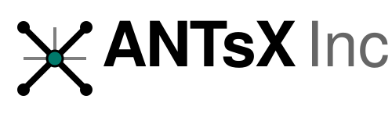

ANTsX Inc. provides the industrialized execution layer for the ANTsX ecosystem. We translate academically validated methods into production-grade systems designed for population-scale research and clinical trials.
To support enterprise needs, we wrap the open-source core in a layer of operational rigor:
Our distinct technical advantage lies in the mathematical generality of the ANTsX core. Unlike competitors optimized solely for human brain MRI, our framework is species and modality agnostic.
We enable seamless translation of biomarkers from animal models to human trials. The same mathematical rigor applied to a mouse brain is applied to a human brain, reducing the "translation gap" in pharmaceutical R&D.
Our diffeomorphic registration engine unifies data across scales, capable of registering histological microscopy with macroscopic MRI/CT. This provides a "Unified Biological Coordinate System" for complex multi-modal studies.
Raw pixel processing is insufficient for modern analytics. We provide deep semantic labeling:
We map every anatomical structure to known, established biological ontologies (e.g., standard neuroanatomical nomenclatures). This ensures that our output is not just a collection of files, but a structured database fully interoperable with global research standards.
We go beyond anatomy. Using advanced joint modeling (e.g., Non-Negative Stiefel Approximating Flow), we map structural phenotypes to hierarchies of function, performance, and cognition. This allows us to link specific anatomical changes directly to behavioral outcomes, providing richer endpoints for clinical trials.